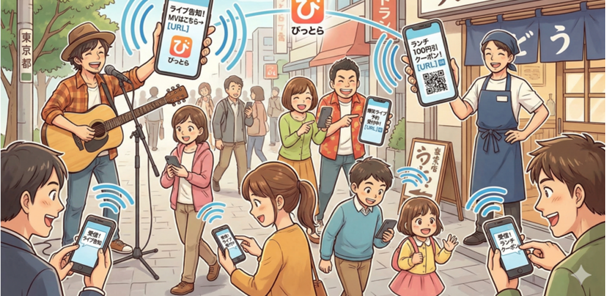

リリース準備中
「びっとら」は、Bluetoothの電波に乗せて「8文字の短句」を周囲に流す、全く新しい宣伝アプリ。
同人イベントでの見本誌アピールから、路上ライブ、飲食店のランチクーポンまで。今、その場にいる人にだけ、あなたの熱量を直接届けます。
いま受信 • ×3
1分前 • ×1
5分前 • ×12

ペアリング不要。すれ違うだけで情報が行き交う、究極にシンプルな仕組み。
Bluetoothの広告パケットに乗るギリギリのサイズ、8文字。発信者はこの8文字にすべてを懸けて、周囲に電波を流します。
受信者のストリームに短句が流れてきます。気になったらタップ。その瞬間だけ相手の端末と直接繋がり、最大300文字の「本文」を引き出します。
引き出した本文にはURLを記載可能。細いBLEの土管から、インターネットの太い土管へ。作品サンプルやクーポン券、予約フォームへ直接誘導できます。
SNSのアルゴリズムでは届かない、「今、ここにいる人」へのダイレクト・アプローチ。
「SNSに情報がない島中サークル…表紙は好みだけど展開が読めない…」
そんな時、すれ違った誰かの「五夏ハピエン神本」という短句を受信！全文には「極上の甘やかしハッピーエンドでした！」の文字。
その場の熱量が、購入の背中を強烈に押します。
短句「新刊あらすじ」＋本文に冒頭の小話を乗せて送信。通りすがりの人を直接掴みます。
本文の最後に「サンプルはこちら [URL]」と貼るだけ。気になった人だけをWebへ誘導。
ストリートミュージシャン、客引きに苦労する居酒屋、お笑い芸人。
「路上ライブ配信中」「ランチ百円引！」「爆笑ライブ予約」といった短句を流しっぱなしにするだけで、近くを歩く人のスマホが自動でキャッチ。
看板を持たずに、半径数メートルの通行人全員にダイレクトマーケティング。
「本日の日替わりメニューはこちら [URL]」「MVのフル視聴 [URL]」など、ネットの力とシームレスに連携。
立ち止まれなくても大丈夫。すれ違った記録は履歴に無期限保存されるため、電車の中でゆっくりチェックできます。
「びっとら」は、中央集権的なサーバーを一切持たない完全なサーバーレス・アプリです。
マッチングも、メッセージのやり取りも、すべてユーザーのスマホ同士が直接Bluetooth(GATT通信)で完結させています。
なぜWebRTCなどのモダンな通信網を使わないのか？理由はシンプルです。
コミケのような超密集地帯では、キャリアの電波もWi-Fiも完全に死ぬからです。
「びっとら」のBLEパケットは、ノイズだらけの電波の隙間を縫って、確実に相手に「8文字」を突き刺します。
そしてもう一つ。サーバーがないということは、運営側の維持費が永久に0円ということです。
だからこそ、このアプリは完全に無料で提供し続けられます。ただし、本文のURLをタップして先のWebサイトを見る通信料だけは、各自の回線でどうにかしてくださいね（笑）。
「すれ違い通信の楽しさを、もう一度現代のスマホに。」
そんな思いで生まれた、ちょっと泥臭くて、最高にしぶとい超軽量ネットワークです。
アカウント登録不要。インストールして「会場モード」をONにするだけ。